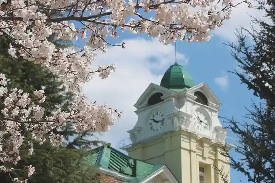
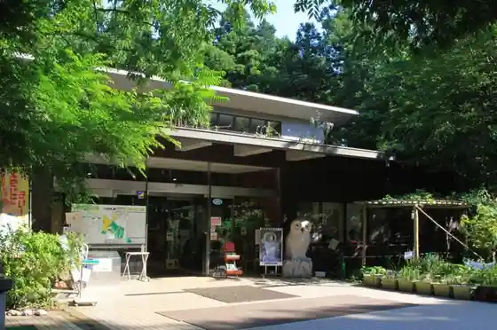
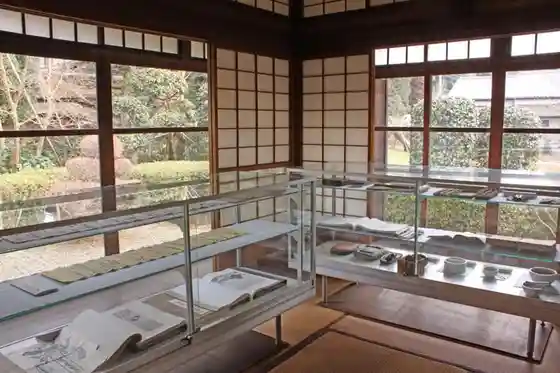

Ushiku Great Buddha
Ushiku, Ibaraki · 029-889-2931 · Official / source link
Ushiku Shato
Ushiku, Ibaraki · 029-873-3151 · Official / source link

Ushiku Nature Kansatsu Forest
Ushiku, Ibaraki · 029-874-6600 · Official / source link

Ogawa Usen Memorial Museum (Kumo Sakana Tei)
Ushiku, Ibaraki · Official / source link

Naganuma Ringo Sono
Ushiku, Ibaraki · 029-875-0592 · Official / source link
Pogatto Farm Dokidoki Tsukuba Ushiku Mise
Ushiku, Ibaraki · Official / source link
Ushiku Kanko Ayame Sono
Ushiku, Ibaraki · Official / source link
Arashi Baths Tsukuba Mise
Ushiku, Ibaraki · 029-871-4500 · Official / source link
Kannon Tera
Ushiku, Ibaraki · Official / source link
Raifutsurii Hitachi no Ushiku
Ushiku, Ibaraki · 029-878-2005 · Official / source link
JA Ryugasaki City JA Ryugasaki City Gekon Nosambutsu Chokubai Tokoro
Ushiku, Ibaraki · 029-870-2281 · Official / source link
Soba Tokoro Nagaoka Ya
Ushiku, Ibaraki · 029-874-8533 · Official / source link